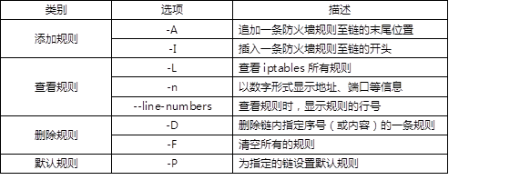
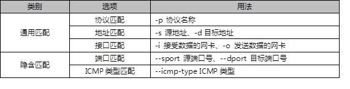
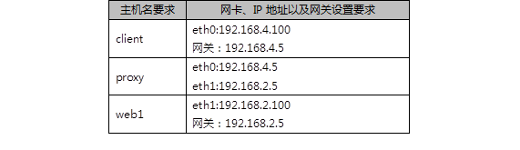
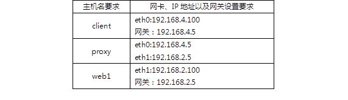

本案例要求练习iptables命令的使用，按照要求完成以下任务：
实现此案例需要按照如下步骤进行。
步骤一：关闭firewalld，启动iptables服务
1）关闭firewalld服务器
- [root@proxy ~]# systemctl stop firewalld.service
- [root@proxy ~]# systemctl disable firewalld.service
2）安装iptables-services并启动服务
- [root@proxy ~]# yum -y install iptables-services
- [root@proxy ~]# systemctl start iptables.service
步骤二：熟悉iptables框架
1）iptables的4个表（区分大小写）：
iptables默认有4个表，nat表（地址转换表）、filter表（数据过滤表）、raw表（状态跟踪表）、mangle表（包标记表）。
2）iptables的5个链（区分大小写）：
INPUT链（入站规则）
OUTPUT链（出站规则）
FORWARD链（转发规则）
PREROUTING链（路由前规则）
POSTROUTING链（路由后规则）
步骤三：iptables命令的基本使用方法
1）iptabels语法格式
- [root@proxy ~]# iptables [-t 表名] 选项 [链名] [条件] [-j 目标操作]
- [root@proxy ~]# iptables -t filter -I INPUT -p icmp -j REJECT
- [root@proxy ~]# iptables -t filter -I INPUT -p icmp -j ACCEPT
- [root@proxy ~]# iptables -I INPUT -p icmp -j REJECT
- //注意事项与规律：
- //可以不指定表，默认为filter表
- //可以不指定链，默认为对应表的所有链
- //如果没有找到匹配条件，则执行防火墙默认规则
- //选项/链名/目标操作用大写字母，其余都小写
- ########################################################################
- //目标操作：
- // ACCEPT：允许通过/放行
- // DROP：直接丢弃，不给出任何回应
- // REJECT：拒绝通过，必要时会给出提示
- // LOG：记录日志，然后传给下一条规则
iptables命令的常用选项如表-1所示。
表-1 iptables常用选项
2）iptables命令的使用案例
创建规则的案例：
- [root@proxy ~]# iptables -t filter -A INPUT -p tcp -j ACCEPT
- //追加规则至filter表中的INPUT链的末尾，允许任何人使用TCP协议访问本机
- [root@proxy ~]# iptables -I INPUT -p udp -j ACCEPT
- //插入规则至filter表中的INPUT链的开头，允许任何人使用UDP协议访问本机
- [root@proxy ~]# iptables -I INPUT 2 -p icmp -j ACCEPT
- //插入规则至filter表中的INPUT链的第2行，允许任何人使用ICMP协议访问本机
查看iptables防火墙规则
- [root@proxy ~]# iptables -nL INPUT //仅查看INPUT链的规则
- target prot opt source destination
- ACCEPT udp -- 0.0.0.0/0 0.0.0.0/0
- ACCEPT icmp -- 0.0.0.0/0 0.0.0.0/0
- ACCEPT tcp -- 0.0.0.0/0 0.0.0.0/0
- [root@proxy ~]# iptables -L INPUT --line-numbers //查看规则，显示行号
- num target prot opt source destination
- 1 ACCEPT udp -- anywhere anywhere
- 2 ACCEPT icmp -- anywhere anywhere
- 3 ACCEPT tcp -- anywhere anywhere
删除规则，清空所有规则
- [root@proxy ~]# iptables -D INPUT 3
- //删除filter表中INPUT链的第3条规则
- [root@proxy ~]# iptables -nL INPUT //查看规则，确认是否删除
- [root@proxy ~]# iptables -F
- //清空filter表中所有链的防火墙规则
- [root@proxy ~]# iptables -t nat -F
- //清空nat表中所有链的防火墙规则
- [root@proxy ~]# iptables -t mangle -F
- //清空mangle表中所有链的防火墙规则
- [root@proxy ~]# iptables -t raw -F
- //清空raw表中所有链的防火墙规则
设置防火墙默认规则
- [root@proxy ~]# iptables -t filter -P INPUT DROP
- [root@proxy ~]# iptables -nL
- Chain INPUT (policy DROP)
- … …
本案例要求创建常用主机防火墙规则以及网络防火墙规则：
根据防火墙保护的对象不同，防火墙可以分为主机型防火墙与网络型防火墙，如图-1所示。
主机型防火墙，主要保护的是服务器本机（过滤威胁本机的数据包）。
网络防火墙，主要保护的是防火墙后面的其他服务器，如web服务器、FTP服务器等。
实现此案例需要按照如下步骤进行。
步骤一：iptables防火墙规则的条件
iptables防火墙可以根据很多很灵活的规则进行过滤行为，具体常用的过滤条件如表-2所示。
表-2 iptables过滤条件
1）主机型防火墙案例
- [root@proxy ~]# iptables -I INPUT -p tcp --dport 80 -j REJECT
- [root@proxy ~]# iptables -I INPUT -s 192.168.2.100 -j REJECT
- [root@proxy ~]# iptables -I INPUT -d 192.168.2.5 -p tcp --dport 80 -j REJECT
- [root@proxy ~]# iptables -I INPUT -i eth0 -p tcp --dport 80 -j REJECT
- [root@proxy ~]# iptables -A INPUT -s 192.168.4.100 -j DROP
- //丢弃192.168.4.100发给本机的所有数据包
- [root@proxy ~]# iptables -A INPUT -s 192.168.2.0/24 -j DROP
- //丢弃192.168.2.0/24网络中所有主机发送给本机的所有数据包
- [root@proxy ~]# iptables -A INPUT -s 114.212.33.12 -p tcp --dport 22 -j REJECT
- //拒绝114.212.33.12使用tcp协议远程连接本机ssh（22端口）
步骤二：开启Linux的路由转发功能
1）Linux内核默认支持软路由功能，通过修改内核参数即可开启或关闭路由转发功能。
- [root@proxy ~]# echo 0 > /proc/sys/net/ipv4/ip_forward //关闭路由转发
- [root@proxy ~]# echo 1 > /proc/sys/net/ipv4/ip_forward //开启路由转发
- //注意以上操作仅当前有效，计算机重启后无效
- [root@proxy ~]# echo 'net.ipv4.ip_forward=1' >> /etc/sysctl.conf
- //修改/etc/sysctl.conf配置文件，可以实现永久有效规则
步骤四：网络型防火墙案例
1）网络型防火墙案例
部署如表-3所示的网络拓扑，一定要把proxy主机的路由转发功能打开。
表-3 实验拓扑
添加网关的命令
- [root@client ~]# nmcli connection modify eth0 ipv4.gateway 192.168.4.5
- [root@client ~]# nmcli connection up eth0
- [root@web1 ~]# nmcli connection modify eth1 ipv4.gateway 192.168.2.5
- [root@web1 ~]# nmcli connection up eth1
确认不同网络的联通性
- [root@client ~]# ping 192.168.2.100
- [root@web1 ~]# ping 192.168.4.100
在web1主机上启动http服务
- [root@web1 ~]# yum -y install httpd
- [root@web1 ~]# echo "test page" > /var/www/html/index.html
- [root@web1 ~]# systemctl restart httpd
没有防火墙的情况下client访问web服务
- [root@client ~]# curl http://192.168.2.100 //成功
设置proxy主机的防火墙规则，保护防火墙后面的Web服务器
- [root@proxy ~]# iptables -I FORWARD -s 192.168.4.100 -p tcp --dport 80 -j DROP
设置完防火墙规则后，再次使用client客户端访问测试效果
- [root@client ~]# curl http://192.168.2.100 //失败
步骤三：禁ping的相关策略
1）默认直接禁ping的问题？
- [root@proxy ~]# iptables -I INPUT -p icmp -j DROP
- //设置完上面的规则后，其他主机确实无法ping本机，但本机也无法ping其他主机
- //当本机ping其他主机，其他主机回应也是使用icmp，对方的回应被丢弃
2）禁止其他主机ping本机，允许本机ping其他主机
- [root@proxy ~]# iptables -A INPUT -p icmp \
- > --icmp-type echo-request -j DROP
- //仅禁止入站的ping请求，不拒绝入站的ping回应包
注意：关于ICMP的类型，可以参考help帮助，参考命令如下：
- [root@proxy ~]# iptables -p icmp --help
本案例要求熟悉使用iptables的扩展规则，实现更丰富的过滤功能，完成以下任务：
iptables在基本过滤条件的基础上还扩展了很多其他条件，在使用时需要使用-m参数来启动这些扩展功能，语法如下：
iptables 选项 链名称 -m 扩展模块 --具体扩展条件 -j 动作
实现此案例需要按照如下步骤进行。
步骤一：根据MAC地址过滤
1）根据IP过滤的规则，当对方修改IP后，防火墙会失效
- [root@proxy ~]# iptables -F
- [root@proxy ~]# iptables -I INPUT -s 192.168.4.100 -p tcp --dport 22 -j DROP
- //设置规则禁止192.168.4.100使用ssh远程本机
但是，当client主机修改IP地址后，该规则就会失效，注意因为修改了IP，对client主机的远程连接会断开，需要使用virt-manager开启虚拟机操作：
- [root@client ~]# ifconfig eth0 192.168.4.101
- [root@client ~]# ssh 192.168.4.5 //依然成功
根据MAC地址过滤，可以防止这种情况的发生
- [root@client ~]# ip link show eth0 //查看client的MAC地址
- eth0: <BROADCAST,MULTICAST,UP,LOWER_UP> mtu 1500 qdisc pfifo_fast state UP mode DEFAULT qlen 1000
- link/ether 52:54:00:00:00:0b brd ff:ff:ff:ff:ff:ff
- [root@proxy ~]# iptables -A INPUT -p tcp --dport 22\
- > -m mac --mac-source 52:54:00:00:00:0b -j DROP
- //拒绝52:54:00:00:00:0b这台主机远程本机
步骤二：基于多端口设置过滤规则
1）一次需要过滤或放行很多端口时会比较方便
- [root@proxy ~]# iptables -A INPUT -p tcp \
- > -m multiport --dports 20:22,25,80,110,143,16501:16800 -j ACCEPT
- //一次性开启20,21,22,25,80,110,143,16501到16800所有的端口
提示，多端口还可以限制多个源端口，但因为源端口不固定，一般不会使用，限制多个源端口的参数是--sports.
步骤三：根据IP地址范围设置规则
1）允许从 192.168.4.10-192.168.4.20 登录
- [root@proxy ~]# iptables -A INPUT -p tcp --dport 22 \
- > -m iprange --src-range 192.168.4.10-192.168.4.20 -j ACCEPT
注意，这里也可以限制多个目标IP的范围，参数是--dst-range,用法与--src-range一致。
2）禁止从 192.168.4.0/24 网段其他的主机登录
- [root@proxy ~]# iptables -A INPUT -p tcp --dport 22 -s 192.168.4.0/24 -j DROP
本案例要求设置防火墙规则，允许位于局域网中的主机可以访问外网，主要包括下列服务：
实现此案例需要按照如下步骤进行。
步骤一：搭建内外网案例环境
表-4 实验拓扑
这里，我们设定192.168.2.0/24网络为外部网络，192.168.4.0/24为内部网络。
现在，在外部网络中有一台web服务器192.168.2.100，因为设置了网关，client已经可以访问此web服务器了。但，如果查看web1的日志就会发现，日志里记录的是192.168.4.100在访问网页。
我们需要实现的效果是，client可以访问web服务器，但要伪装为192.168.2.5后再访问web服务器(模拟所有位于公司内部的电脑都使用的是私有IP，希望访问外网，就需要伪装为公司的外网IP后才可以)。
步骤二：设置防火墙规则，实现IP地址的伪装（SNAT源地址转换）
1）确保proxy主机开启了路由转发功能
- [root@proxy ~]# echo 1 > /proc/sys/net/ipv4/ip_forward //开启路由转发
2）设置防火墙规则，实现SNAT地址转换
- [root@proxy ~]# iptables -t nat -A POSTROUTING \
- > -s 192.168.4.0/24 -p tcp --dport 80 -j SNAT --to-source 192.168.2.5
3）登陆web主机查看日志
- [root@proxy ~]# tail /var/log/httpd/access_log
- .. ..
- 192.168.2.5 - - [12/Aug/2018:17:57:10 +0800] "GET / HTTP/1.1" 200 27 "-" "Mozilla/4.0 (compatible; MSIE 6.0; Windows NT 5.1; SV1)"
通过日志会发现，客户端是先伪装为了192.168.2.5之后再访问的web服务器！
4）扩展知识，对于proxy外网IP不固定的情况可以执行下面的地址伪装，动态伪装IP。
- [root@proxy ~]# iptables -t nat -A POSTROUTING \
- > -s 192.168.4.0/24 -p tcp --dport 80 -j MASQUERADE
最后，所有iptables规则都是临时规则，如果需要永久保留规则需要执行如下命令:
- [root@proxy ~]# service iptables save